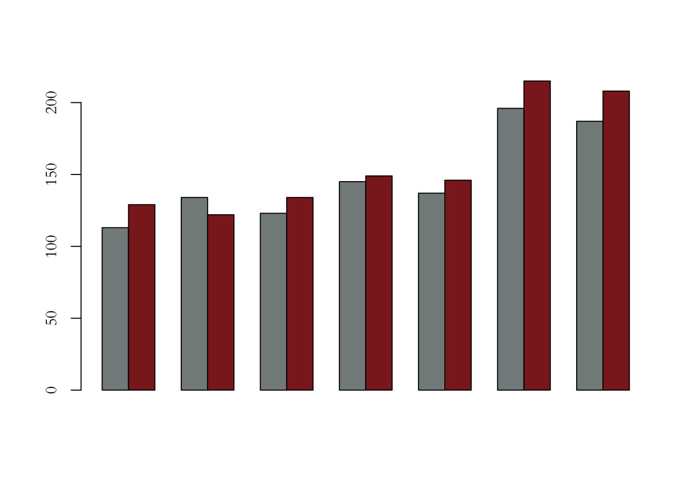
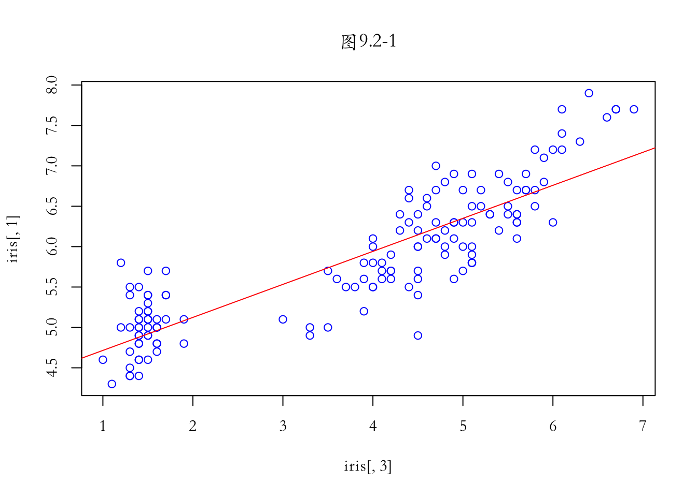

第 3 章 低级绘图函数
3.1 标题
## title(main,sub,xlab,ylab)
## mian='内容' 或者 main=list('',font,col,cex)## 示例5-1
data = data.frame(pre=c(113,134,123,145,137,196,187),
now=c(129,122,134,149,146,215,208))
col=c('azure4','brown4')
par(family='STKaiti')
barplot(as.matrix(rbind(data$pre,data$now)),
beside=TRUE,col=col,axes=F)
axis(2)
## 添加主标题、副标题、主轴标题
data = data.frame(pre=c(113,134,123,145,137,196,187),
now=c(129,122,134,149,146,215,208))
col=c('azure4','brown4')
par(family='STKaiti')
barplot(as.matrix(rbind(data$pre,data$now)),
beside=TRUE,col=col,axes=F)
axis(2)
title(main=list('图5-1 本周pv趋势分析图',cex=1.5,col='red',font=3),
sub='数据来源：某电商网站',
ylab='网站日页面浏览量pv')## 示例5-2
data = data.frame(pre=c(113,134,123,145,137,196,187),
now=c(129,122,134,149,146,215,208))
col=c('azure4','brown4')
par(family='STKaiti')
barplot(as.matrix(rbind(data$pre,data$now)),
beside=TRUE,col=col,axes=T,
main=list('图5-2 本周pv趋势分析图',cex=1.5,col='red',font=3),
sub='数据来源：某电商网站',
ylab='网站日页面浏览量pv')3.2 图例
## legend(x,y,legend,horiz,ncol,pch,lty,col,bg,bty,title)
## x,y 图例位置，或 center、left、right、top、bottom、bottomright、bottomleft、topleft、topright
## legend 字符向量表示图例文字
## horiz FALSE(默认)图例垂直排列、反之水平
## ncol 图例的列数目；horiz=TRUE无意义
## pch 图例中的点样式；NA无点样式
## lty 图例中的线样式；NA无线样式
## col 图例中点/线的颜色
## bg 图例的背景颜色；为n时无效
## bty 图例框的样式；为n时无边框；为o时显示边框
## title 图例的标题## 示例6-1
data = data.frame(pre=c(113,134,123,145,137,196,187),
now=c(129,122,134,149,146,215,208))
col=c('azure4','brown4')
par(family='STKaiti')
barplot(as.matrix(rbind(data$pre,data$now)),
beside=TRUE,col=col,axes=T,
main=list('图6-1',cex=1.5,col='red',font=3),
sub='数据来源：某电商网站',
ylab='网站日页面浏览量pv')
text.legend = c('上周pv','本周pv')
legend('topleft',pch=c(15,15),legend=text.legend,
col=col,bty='n',horiz=TRUE)## 示例6-2
par(family='STKaiti')
barplot(as.matrix(rbind(data$pre,data$now)),
beside=TRUE,col=col,axes=T,
main=list('图6-2',cex=1.5,col='red',font=3),
sub='数据来源：某电商网站',
ylab='网站日页面浏览量pv')
legend('top',pch=c(15,15),legend=text.legend,
col=col,bty='o',horiz=FALSE)## 示例6-3
par(family='STKaiti')
barplot(as.matrix(rbind(data$pre,data$now)),
beside=TRUE,col=col,axes=T,
main=list('图6-3',cex=1.5,col='red',font=3),
sub='数据来源：某电商网站',
ylab='网站日页面浏览量pv',
legend.text=text.legend)3.3 坐标轴
## 低级绘图
## axis(side,labels,front.axis,cex.axis,cool.axis,at,tick,col,col.ticks,)
## side 取1、2、3、4对应下、左、上、右
## labels 通过向量来设置坐标轴内各刻度的名称（刻度标记）
## font.axis 刻度标记的字体
## cex.axis 刻度标记的大小
## at 通过向量来设置坐标轴内各刻度标记的位置，at参数向量与labels参数向量一一对应
## tick 逻辑参数，TRUE画出坐标轴，反之不画，FALSE不影响labels展示
## col 坐标轴的颜色，tick=TRUE时有效，除了刻度标记(labels)以外的部分颜色，包括col.ticks
## col.ticks 坐标轴刻度线的颜色，即与坐标轴垂直的小刻度线的颜色
## lty 坐标轴的样式，tick=TRUE时有效
## lwd 坐标轴的宽度，tick=TRUE时有效## 示例7-1
data = data.frame(pre=c(113,134,123,145,137,196,187),
now=c(129,122,134,149,146,215,208))
col=c('azure4','brown4')
par(family='STKaiti')
barplot(as.matrix(rbind(data$pre,data$now)),
beside=TRUE,col=col,axes=T,
main=list('图7-1',cex=1.5,col='red',font=3),
sub='数据来源：某电商网站',
ylab='网站日页面浏览量pv',
legend.text=c('上周pv','本周pv'))
text.x=c('周一','周二','周三','周四','周五','周六','周日')
axis(1,at=c(2,5,8,11,14,17,20), labels=text.x, tick=FALSE, cex.axis=0.75)## 示例7-2
par(family='STKaiti')
plot(1:7,rnorm(7),main='图7-2',
type='s',xaxt='n',frame=F,col='red')
axis(1,at=1:7,labels=LETTERS[1:7],col.axis='blue')
axis(3,col='gold',lty=2,lwd=1.5)
axis(4,col='violet',col.axis='dark violet', lwd=2)## 高级绘图 plot
## 设置坐标轴的展示和范围axes、xlim、ylim
## axes T(默认)显示x、y轴;F隐藏
## xaxt 坐标轴样式's'(默认)标准样式显示;'n'隐藏x轴
## yaxt 同上
## xaxs 轴的计算方式,'r'(默认)先把原始数据的范围向外扩大4%,'l'直接使用原始数据范围
## yaxs 同上
## xlog 设置x轴坐标是否取对数,F(默认)
## ylog 同上
## xlim x轴的范围,c(from,to),from是x轴的首坐标,to是尾坐标
## ylim 同上
## 注意:
## 同时隐藏x、y轴,则设置axes=F
## 隐藏x轴只显示y轴,则设置xaxt='n'或者设置axes=F之后使用axis(2)## 示例7-3
par(family='STKaiti')
plot(1:7,rnorm(7),main='图7-3',type='s',
axes=T,frame=F,col='red',
xaxt='s')
## 示例7-4
par(family='STKaiti')
lx <- seq(1, 5, length.out = 41)
yl <- expression(e^{-frac(1,2) * {log[10](x)}^2})
y <- exp(-.5*lx^2)
op <- par(mfrow = c(2,1), mar = par("mar")-c(1,0,2,0), mgp = c(2, .7, 0))
plot(10^lx, y, log = "xy", type = "l", col = "purple",
main = "7-4 Log-Log plot", ylab = yl, xlab = "x")
plot(10^lx, y, log = "xy", type = "o", pch = ".", col = "forestgreen",
main = "7-4 Log-Log plot with custom axes", ylab = yl, xlab = "x",
axes = FALSE, frame.plot = TRUE)
my.at <- 10^(1:5)
axis(1, at = my.at, labels = formatC(my.at, format = "fg"))
e.y <- -5:-1 ; at.y <- 10^e.y
axis(2, at = at.y, col.axis = "red", las = 1,
labels = as.expression(lapply(e.y, function(E) bquote(10^.(E)))))## 坐标轴的密度分布表示
library(ggplot2)
par(family='STKaiti')
diamonds1 = diamonds[sample(1:nrow(diamonds),1000),]
attach(diamonds1)
plot(carat,price,main='图7-5')
rug(carat)
rug(price,side=2)detach(diamonds1)3.4 网格线
## grid(ny,nx)
## ny 设置水平网格的数目 NA不绘制相应的网格线
## nx 设置垂直网格的数量 NA不绘制相应的网格线## 示例8-1
x.text = paste(seq(1,12,1),'月')
sales.volume = c(158721,190094,108441,88092,68709,50116,90117,16004,186045,106334,89092,104933)
par(family='STKaiti')
plot(sales.volume,type='b',ylim=c(20000,250000),axes = F,
frame.plot = TRUE,main='图8-1 月销量趋势图',
xlab='月份',ylab='销量(元)')
axis(1,at=1:12,labels=x.text,tick=F)
axis(2, at = seq(50000,250000,50000), las = 1)
grid(nx=NA,ny=8,lwd=1,lty=2)
## 示例8-2
par(family='STKaiti')
plot(sales.volume,type='b',ylim=c(20000,250000),xaxt='n',
main='图8-2 月销量趋势图',xlab='月份',ylab='销量(元)')
axis(1,at=1:12,labels=x.text,tick=F)
grid(nx=NULL,ny=NULL,col='lightgray',
lty='dotted',lwd=par('lwd'),equilogs=T)3.5 点
## x,y 横纵坐标位置，可以是向量表示多个点的位置
## type 9种样式; p l b c o h s S n
## pch 点样式
## col 点颜色
## bg 点背景色 pch取21～25时有效
## lwd 点的边线的宽度
## cex 点的大小## 示例9.1
x = 2:9
y = 2:9
op <- par(mfrow = c(3,3), mar = .1+ c(2,2,3,1))
for(tp in c("p","l","b","c","o","h","s","S","n")){
plot(1,ylim=c(1,10),xlim=c(1,10),col='white',type = tp,
main = paste0("9.1 points(*, type = \"", tp, "\")"))
points(x,y,type=tp)
if(tp == "S") {
points(x, y, type = "s", col = "red", lty = 2)
mtext("points(*, type = \"s\", ...)", col = "red", cex = 0.8)
}
}3.6 线
## 直线abline 、曲线lines 、线段segments
## abline
## a、b 截距、斜率 abline(a,b)
## h 水平线 abline(h=y)
## v 垂直线 abline(v=x)
## coef 提取系数的R对象 abline(lm.obj)## abline
## 示例9.2-1
sol.lm = lm(iris[,1]~iris[,3])
par(family='STKaiti')
plot(iris[,1]~iris[,3],col='blue',main='图9.2-1')
abline(sol.lm,col='red')
## lines
## 示例9.2-2
x <- 0:12
y <- sin(pi/5 * x)
op <- par(mfrow = c(3,3), mar = .1+ c(2,2,3,1))
for (tp in c("p","l","b","c","o","h","s","S","n")) {
plot(y ~ x, type = tp, main = paste0("9.2-2 plot(*, type = \"", tp, "\")"))
if(tp == "S") {
lines(x, y, type = "s", col = "red", lty = 2)
mtext("lines(*, type = \"s\", ...)", col = "red", cex = 0.8)
}
}## 示例9.2-3
par(family='STKaiti')
plot(cars,main='图9.2-3 Stopping Distance versus Speed')
lines(stats::lowess(cars))